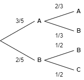

16. Shannon Entropy#
Shannon entropy can be used to measure the uncertainty in a probability distribution.
From this should on whenever we refer to entropy we are referring to shannon entropy unless stated otherwise.
Shannon introduced this concept of entropy in his paper A Mathematical Theory of Communication [Shan48]
16.1. Intuitive Explanation of Uncertainty#
Suppose we have three random variables,
Suppose we sample a random character \(x_i\) from the random variable \(X_i\)
Since \(X_1\) only contain ‘A’, we are certain \(x_i\) is ‘A’.
\(X_2\) contains ‘A’s and ‘B’s so we cannot be certain whether \(x_2\) is an ‘A’ or a ‘B’. So, we are less certain about \(x_2\) than we are about \(x_3\).
\(X_3\) contains ‘A’s, ‘B’s, ‘C’s, and ‘D’s so we less certain about \(x_3\) than \(X_2\).
Entropy is a way of quantifying this uncertainty.
16.2. Formula for Entropy#
Suppose we have a random variable \(X = \{ x_1, x_2, \dots, x_n \}\) where \(P(X = x_i) = p_i\). The shannon entropy of \(X\) is,
16.3. Example: Coin Toss#
Suppose we flip a coin. The probability of getting a heads is \(0.5\). The entropy for this random variable is,
This corresponds to the number of bits needed to convey the outcome of the coin toss; 1 being heads and 0 being tails for example. However, we will see in the next example that this is not the best way to think about this. Instead consider we ask one binary questions: Is the coin heads. This is enough to encode all the outcomes of the experiment.
16.4. Example: A random variable with more outcomes#
Suppose we have a random variable \(X = \{a, b, c, d\}\) such that each event is equally likely to happen. In this case,
Again, this corresponds to the number of bits needed to convey the outcome of the random variable: \(00=a\), \(01=b\), \(10=c\), and \(11=d\).
Here, \(H(X) = \frac{7}{4}\). Why is the number of bits needed to convey the message less when the probability of each event was equal? Suppose we ask the binary questions: “Is \(X = a\)”, “Is \(X = b\)”, “Is \(X = c\)”. The expected number of binary questions we have to ask is,
Which is the same as the entropy. It can be shown that entropy is the minimum expected number of binary questions needed to determine \(X\).
16.5. Axioms Use to Derive Entropy#
In Shannon’s paper, presents three axioms that a measure of a uncertainty should follow and then shows the only function that satisfies these axioms is the function above. The axioms are as follows:
\(H\) should be continuous on the probabilities \(p_i\).
\(H\) should me monotonically increasing.
If an event can be broken down into multiple choices, the entropy of the event should be equal to the weighted sum of the entropy of its component choices.
Axiom 3 is not as obvious as the other two so it is worth looking at it a little more closely. Suppose we have a random variable \(X = {A, A, A, B, B, C}\). If we were the pick a character at random from \(X\) the entropy of this system would be,
Suppose that the character we pick depends on the previous character in the list. The choices and probabilities are shown in the figure below.
Axiom 3 means,
16.6. Properties of Entropy#
Shannon derives a number of properties, some are listed here.
a. \(H = 0\) if and only if \(p_i = 1\) and all other probabilities are \(0\).
Suppose we have a random variable with \(n\) possibilities, the maximum of \(H\) will be when \(p_i = \frac{1}{n}\) for \(n \in \{ 0, 1, \dots, n - 1 \}\).
Suppose we have two random variables \(X\) and \(Y\) which have \(n\) and \(m\) possibilities respectively. Let \(P(X=x_i, Y=y_i) = p_{i, j}\). The entropy of this joint event is,
Also,
It can also be shown that,
Suppose we have two random variables \(X\) and \(Y\) that are not necessarily independent. The conditional probability is defined as,
The conditional entropy is defined as,
16.7. Appendix: Entropy Property Proofs#
Proofs of the properties defined above.
16.7.1. Property A#
Suppose we probabilities \(p = {p_0, p_1, \dots, p_{n_1}}\) where \(p_i = 1\) and the rest of the probabilities are \(0\). For \(i\) we have,
For \(j\) where \(j \neq i\),
So every term in \(H\) is zero so \(H = 0\).
16.7.2. Property B#
This proof is taken from here https://math.stackexchange.com/questions/3579001/prove-the-maximum-value-of-entropy-function.
Using Jensen’s Inequality,
By substituting in \(p_i = \frac{1}{n}\) to the entropy formula we get,
Which is the upper bound.
16.7.3. Property C#
This proof is taken from https://math.stackexchange.com/questions/4153125/shannons-proof-that-joint-entropy-is-less-or-equal-to-the-sum-of-marginal-entro.
Shannon entropy is,
Since we have joint probabilities we have \(p_i = \sum_{j} p_{i, j}\). Substituting this into the entropy formula, we get,
Finally, again using Jensen’s inequality,